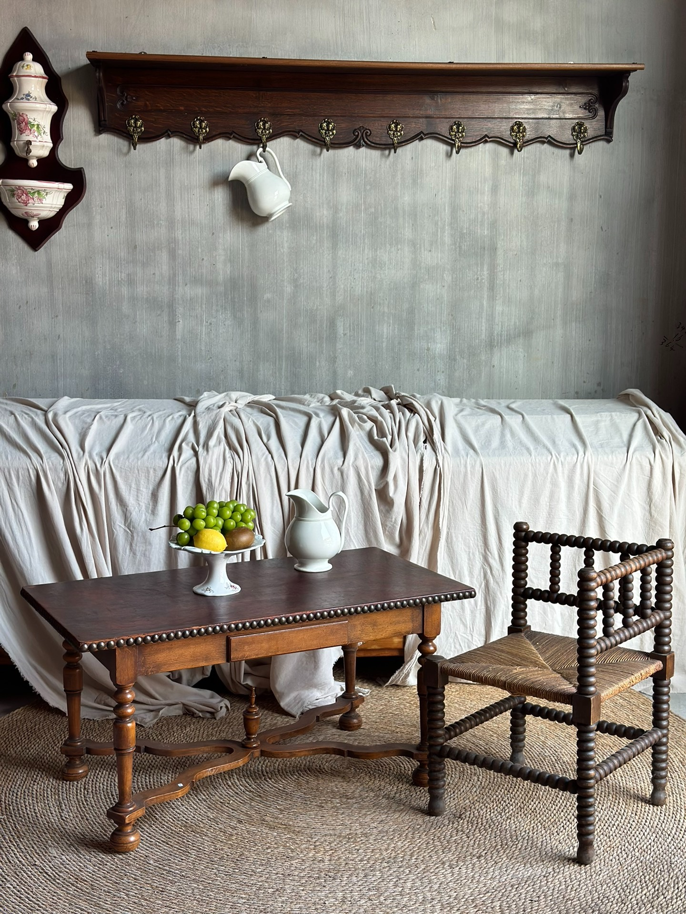
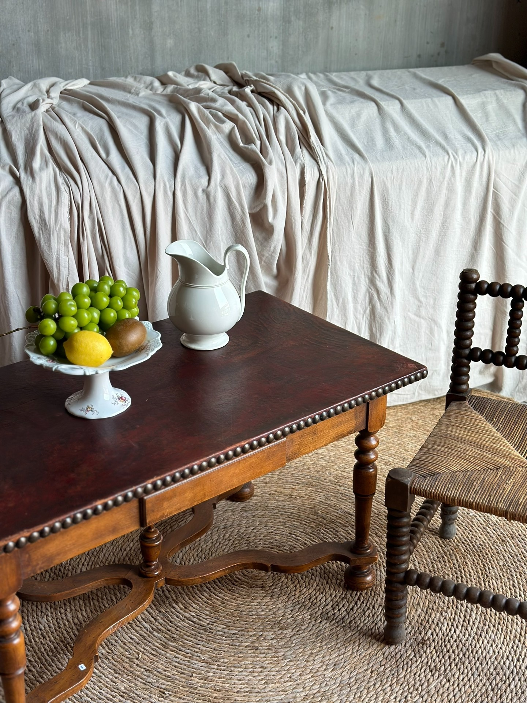
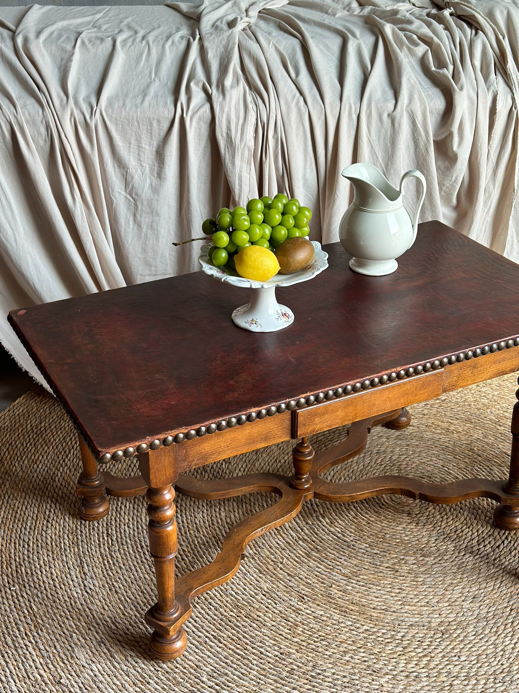
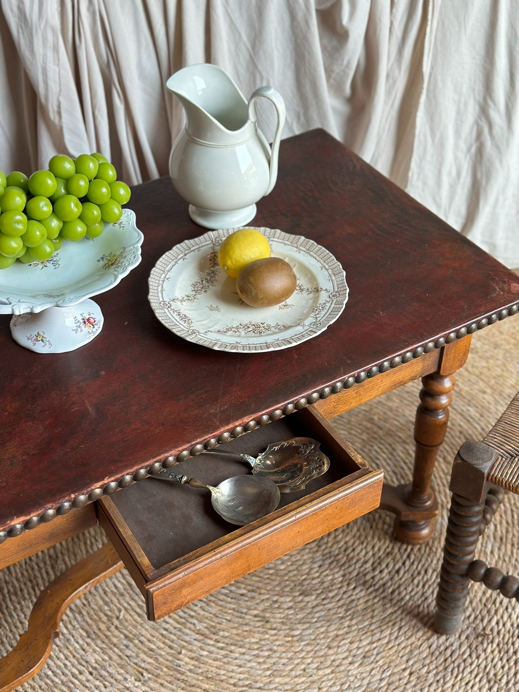
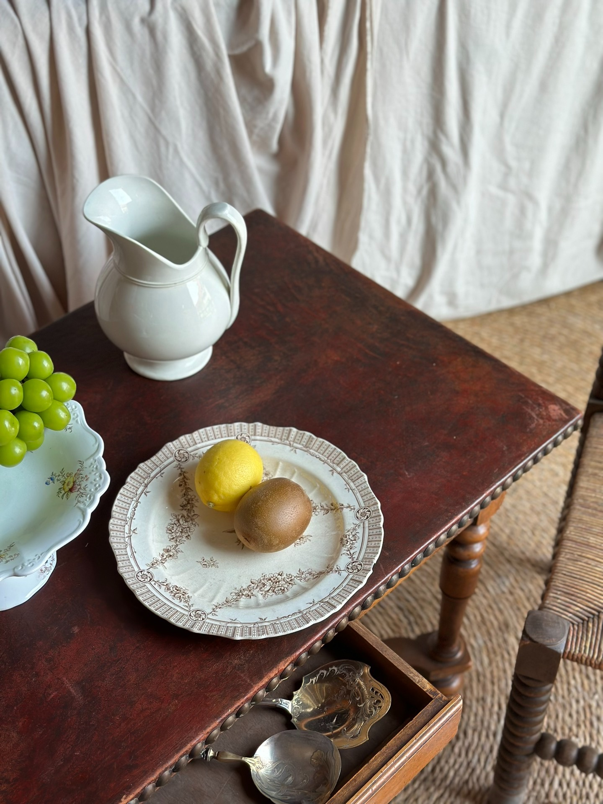
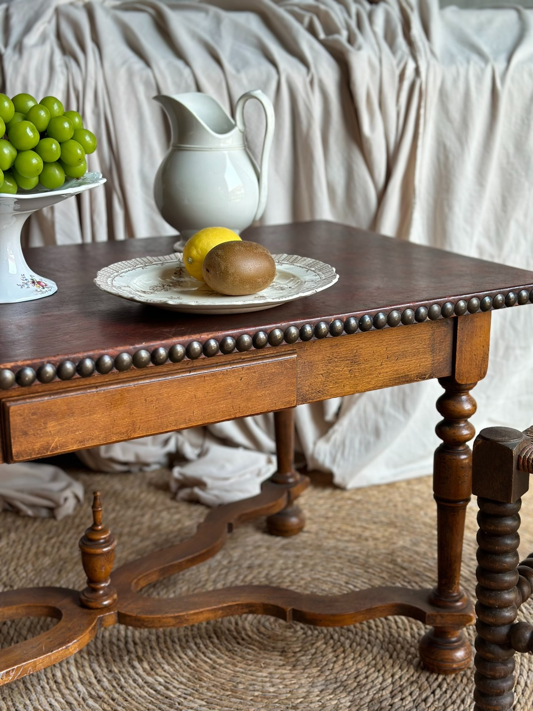

【国内现货】法国路易十三风格古董皮面茶几
桌面尺寸：100*52.3cm
产品ID：820694749260
4500 ¥
【国内现货】法国路易十三风格古董皮面茶几
桌面尺寸：100
52.3cm
高度：50.3cm
4500￥ 顺丰/德邦到付
整体属于法式中古/巴洛克—路易十三风格 (Louis XIII style) 的衍生设计：
特征分析：
桌脚
四个桌腿是 “balustre tourné”（车旋柱状腿），鼓肚形和环状雕刻交替，是17世纪路易十三风格的典型特征。
桌脚之间有 横向与十字交叉支撑（entretoise en H ou en X），兼具稳固与装饰作用。
桌面与边缘
桌沿下装饰了一圈 钉头/珠钉状饰边（ornement de clous ou perles sculptées），这一点常见于路易十三—路易十四过渡期家具。
桌面是深色抛光木板，配合温润的包浆，典型中古味道。
风格总结：
主体风格：法式路易十三风格（Louis XIII），以车旋腿、十字撑、深色橡木/胡桃木为典型特征。
装饰走向：带有轻微的巴洛克味道，但整体朴素，兼具乡村风格（campagne）。






